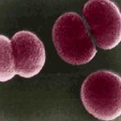
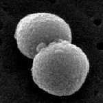

Pneumococcal Molecular Epidemiology Network



The Pneumococcal Molecular Epidemiology Network (PMEN) was established in 1997 with the aim of global surveillance of antibiotic-resistant Streptococcus pneumoniae and the standardization of nomenclature and classification of resistant clones. Global antibiotic-susceptible clones are also now considered for inclusion into the Network.
There are currently 43 clones described by the PMEN (the 1st 16 are published by McGee et al 2001. Clones 17-26 have been confirmed by the Network and 27-43 need to have the type strains submitted, ratified and deposited with ATCC).